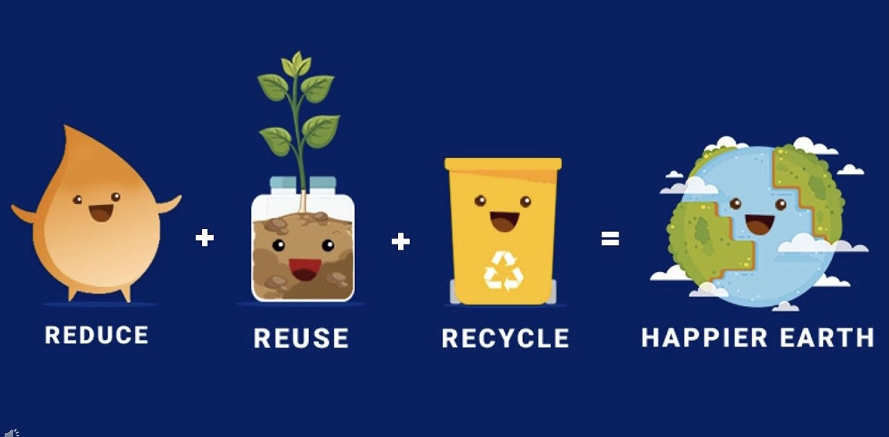

Waste, and how we choose to handle it, affects our world's environment—that's YOUR environment.
The environment is everything around you including the air, water, land, plants, and man-made things. And since by now you probably know that you need a healthy environment for your own health and happiness, you can understand why effective waste management is so important to YOU and everyone else.
Waste is anything we throw away or get rid of, that doesn’t get used.
You can help by learning about and practicing the three R's of waste management: Reduce, reuse, and recycle! Practicing all three of these activities every day is not only important for a healthy environment, but it can also be fun too. So let's take a minute right now to learn more about waste and waste management, so you can become a key player in making our world a safe and healthy place.
Reducing is simply creating less waste. It's the best method for keeping the environment clean, so it's the first of the 3 Rs. By reducing, you stop the problem at the source. Making less waste to begin with means there's less waste to clean up. Reducing waste can be as simple as using both sides of a sheet of paper, using ceramic mugs instead of disposable cups, or buying in bulk rather than individually packaged items. The end result for producing less waste is money saved, resources conserved, pollution reduced, and landfill space saved.
The idea is not to generate waste, but to reduce waste at or near the source of generation (in our homes, businesses, and institutions). Practicing waste reduction and reuse are the best ways to divert the growing volume of waste.
Different ways to reduce waste :
Reuse is the action or practice of using an item, whether for its original purpose or to fulfill a different function. It should be distinguished from recycling, which is the breaking down of used items to make raw materials for the manufacture of new products.
You can "reuse" materials in their original form instead of throwing them away,
or pass those materials on to others who could use them too! Remember, one
man's trash is another man's treasure!
Here are some examples of reuse...
Recycle—don’t just toss everything in the trash. Lots of things (like cans, bottles, paper, and cardboard) can be remade into either the same kind of thing or new products. Making new items from recycled ones also takes less energy and fewer resources than making products from brand new materials.
Just about anything in your home (or office or school, etc.) that cannot be reused CAN be recycled into something else. You'd be amazed what can be done with a recycled product! A recycled soda bottle can be made into T-shirts, combs, or hundreds of other plastic goods that can be used for many years. Even your brand new computer case might be made from ordinary recycled plastics. And paper products can take on different forms as well; an old phone book or coloring book might become one of your school books or a notebook.
Your recycling mission is not impossible! In fact, it is very simple:
Don't throw away anything that can be recycled!
Recycle the present, save the future.
Here is a list of things you may be able to recycle
Just ask your local recycling office (city, county, or state) about what can be recycled.
Now isn't that easy? There is so much that YOU can do with very little effort. And the best part is you will probably save yourself a lot of money while you are at it!